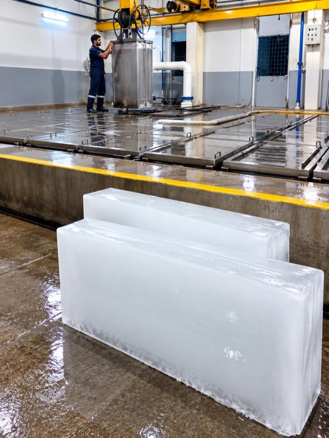
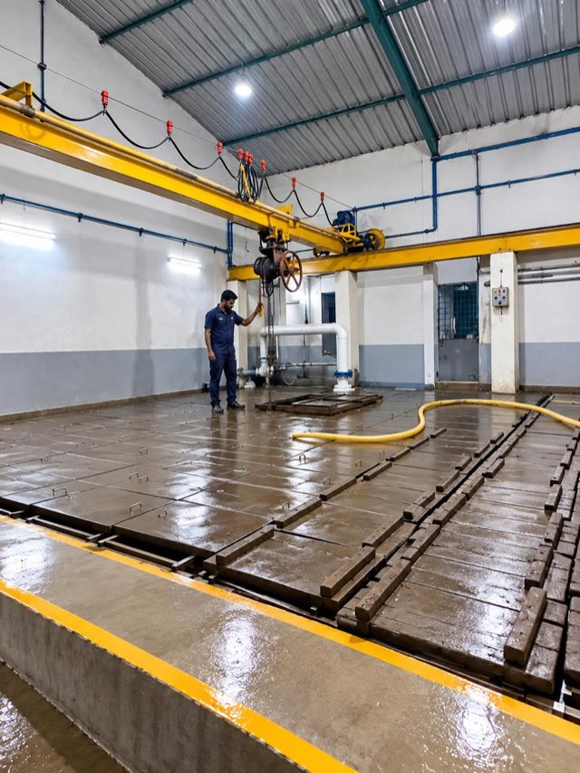
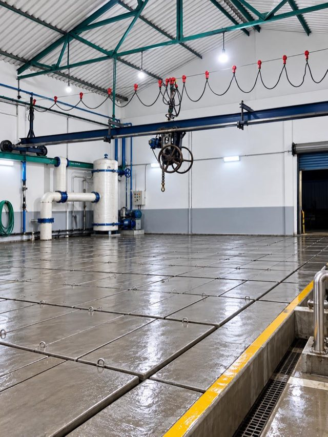
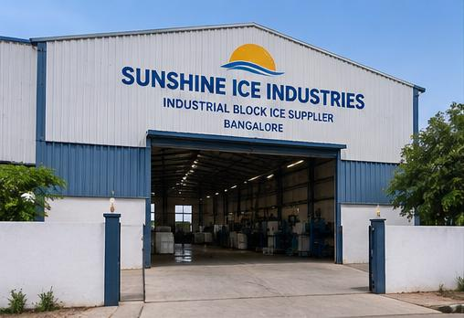

Block ice at industrial scale. Frozen daily, delivered cold.
Sunshine Ice Industries is an ice block manufacturer in Bengaluru (Bangalore), supplying ice slabs and crushed ice to Bengaluru Metro projects, the construction industry, chemical plants, food processing and fisheries — from factories in Bengaluru and Mysuru, with round-the-clock production and delivery up to 150 km across Karnataka.
What we make
Every block is frozen slowly in brine-tank freezers and hardened to a −8°C core, so it stays solid through transport and melts slowly on site.
Full slab
Our workhorse block for concrete cooling and bulk cold storage. Dense and slow-melting — supplied whole, exactly as construction sites use it.
110 kg ice slab detailsHalf slab
Easier to handle by two workers — ideal for fisheries, markets, events and smaller jobs where a full slab is too much.
Compare block sizesReady to use
Slabs crushed on demand and delivered in insulated loads — for fisheries, fresh produce and processing lines that need ice packed over the product.
Crushed ice supply in BangaloreWho we supply
Mass concrete pours generate heat — and hot concrete cracks. We supply solid ice blocks to bring concrete temperature down for metro piers, tunnels and station works. Sites use the block whole, not crushed, and we schedule supply around your pour timings — including night pours — so ice arrives solid, cold and on the minute.
We work as a one-stop ice supplier for large concrete projects. For Bengaluru Metro work we sourced 500 tonnes of ice from around Karnataka and handled everything through to delivery at the concrete plant's doorstep.
One-stop ice supply for large poursTemperature-controlled concrete for high-rise rafts, flyovers and industrial foundations. Consistent block density means predictable cooling per tonne.
Ice for concrete cooling in BangaloreCrushed ice and blocks to hold produce cold through washing, sorting, packing and transport — keeping the cold chain unbroken from plant to market.
Process and reaction cooling where a steady, high-volume ice supply keeps temperatures in range — delivered on schedule, day and night.
From our Mysuru factory we ice the Kaveri river fish trade — slabs and crushed ice packed straight over the catch, keeping it export-fresh from riverbank to market and onward shipment.
Bulk ice for weddings, exhibitions and catering — delivered ahead of your setup window with insulated handling.
Backup cooling for cold rooms, dairies, poultry and logistics during peak summer and power outages.
How it's made
Water is filled into steel moulds and lowered into the freezing tanks — sized for full 110 kg slabs and 55 kg half blocks.
Slabs freeze slowly in chilled brine tanks for a dense, clear block with fewer air pockets and slower melt.
Blocks are held until the core reaches −8°C, so they arrive solid even after a long summer run.
Blocks are weighed and moved in covered, insulated vehicles — supplied whole, or crushed at loading when the order calls for it.
Inside our Bengaluru ice plant



Customer reviews
★★★★★
"We take several tonnes of ice blocks for every major pour on our metro package. Sunshine has never missed a night-pour slot in two years — the blocks arrive weighed, solid and genuinely cold."
★★★★★
"Concrete temperature dropped exactly as our mix design needed. Their blocks are dense and consistent, which matters when you're dosing ice by weight at the batching plant."
★★★★☆
"I've bought slabs from them for my fish stall for years. Clean ice, honest weight, and the morning delivery is reliable even in peak summer when everyone else runs short."
Common questions
We deliver across Bengaluru (Bangalore) and up to 150 km from our factories in Bengaluru and Mysuru — covering both cities and surrounding districts — in covered, insulated vehicles so blocks arrive solid.
Full slabs of 110 kg, half slabs of 55 kg, and crushed ice supplied by the tonne. Minimum order is 10 full slabs or 20 half blocks.
Yes — solid ice blocks for concrete temperature control on metro and construction pours. Sites use the block whole, and we schedule supply around your pour timings, including night pours.
Call or WhatsApp +91 98459 89815 with your tonnage, block size and delivery location — we confirm pricing and dispatch schedule the same day.
Get in touch
Tell us your tonnage, block size and delivery window — we'll confirm pricing and dispatch schedule the same day. Standing contracts available for metro packages and batching plants.
For urgent same-day requirements during summer, call before 10 AM for evening delivery.
